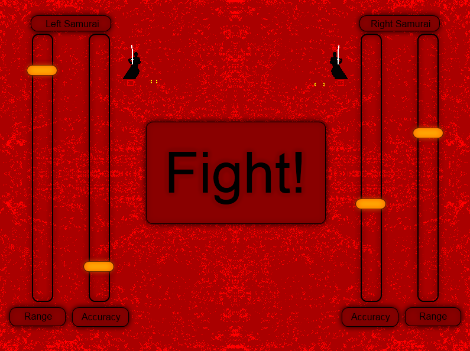
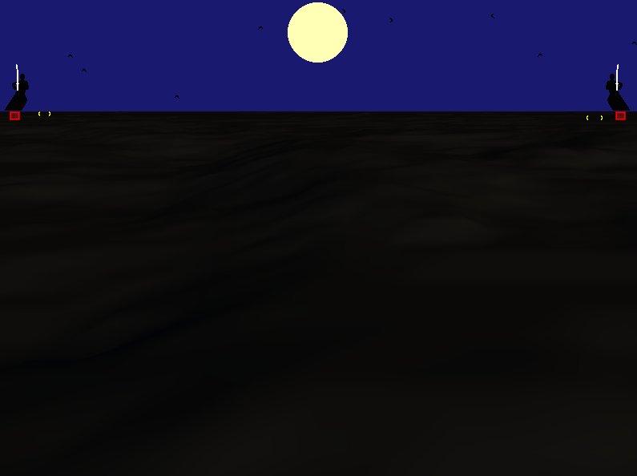
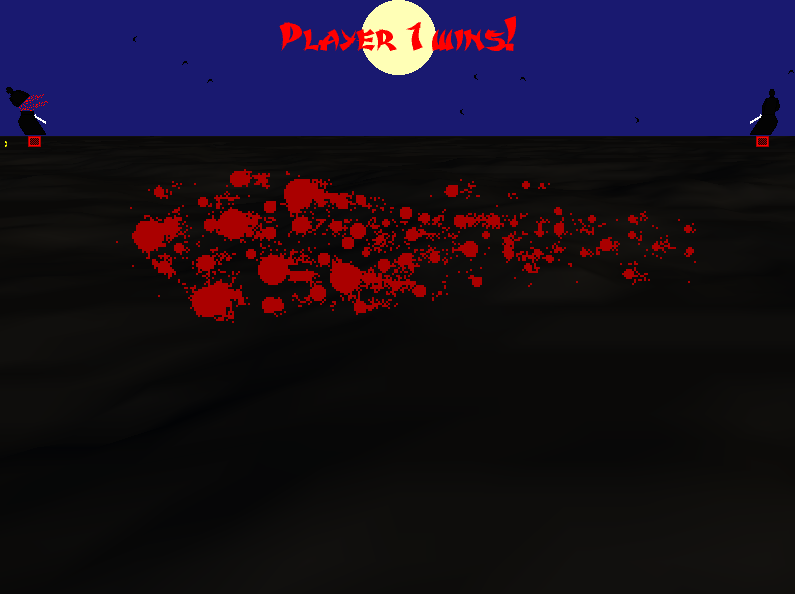

Simplistic in design, this XNA game for a university project is nevertheless highly competative. Before the game starts, each player can customize their samurai by adjusting his speed:accuracy ratio. While the speed factor allows a samurai to strike a bit further and thus before his opponent, the targeting reticle becomes very small. Inversely, if a player chooses to set their accuracy to a high setting, their aim will be closer to their body (so they will probably strike second), but their area of hit detection (represented by yellow brackets in front of the samurai) will be much larger.
The visuals (3d terrain to give a feeling of depth, full moon) and audio (short japanese flute sound) set the mood for a quiet but deadly samurai fight. Flying leaves in the background add to the richness of the setting. In a moment the two opponents start running towards each other. The left player uses spacebar, while the right player uses the enter key.
Once the samurai pass each other, they stand still in the opposing corners of the screen, increasing the pressure. Then suddenly one is cut in two and the winner is announced.
You can contact me on angel_lakov@yahoo.com.